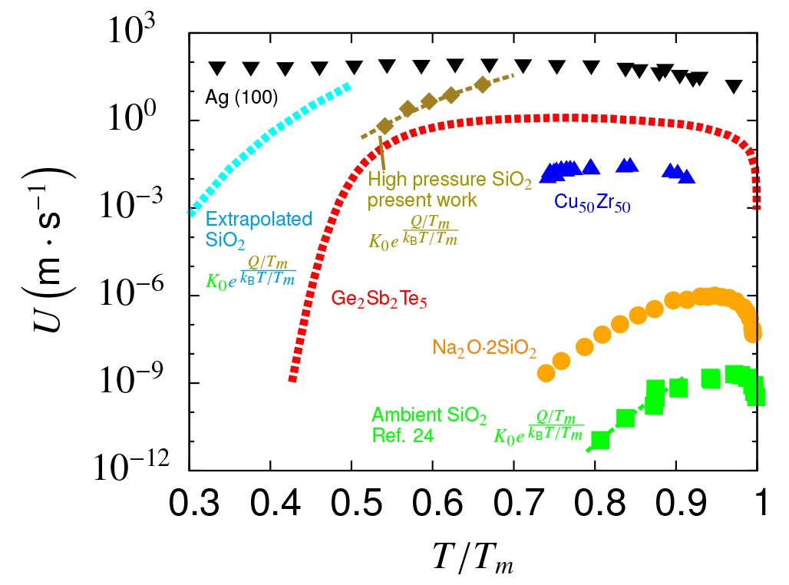

Our work shows that shock-compressed silica transforms into a poor glass former that subsequently exhibits ultrafast crystallization within a few nanoseconds. Absent impurities, this crystallization obeys a homogeneous reconstructive nucleation and grain growth model. This work provides insight into laser-induced damage and meteoroid impact events.
Fused silica is a long-lifetime metastable state of SiO2. Under ambient conditions, the complete crystallization from silica glass to quartz never happens in a human timescale. This makes fused silica a typical prototype of good glass formers. Given the right pressure and temperature, however, the crystallization to stishovite can instead happen in a billionth of a second. For more than half a century, observations of metastable stishovite have been made in laser damaged fused silica surface and meteorite impact craters without knowing the underlining dynamics.
Using million-atom molecular dynamics simulations (the Multi-Scale Shock Technique), we provide an atomistic insight into the kinetics of this high-pressure silica crystallization: how the transition initiates, how it proceeds, the timescale, and the temperature dependence.
The following video shows that the crystallization is a homogeneous nucleation and growth process for pure silica. Nucleation starts with the thermal fluctuation of nuclei. Some of these nuclei grow steadily into a larger size as atoms deposit at the boundaries (0.2 ns). The system then enters a rapid growth stage while the grains are well separated from each other (0.4 ns). Finally, grains merge into each other with disordered regions at the grain boundaries.
Views of shocked fused silica of 486,000 atoms at three different stages: nucleation (0.2 ns), explosive grain growth (0.4 ns) and coalescence (1.5 ns).
Our work has broad implications in a wide range of disciplines from the large scale of geophysics to the small scale of nanotechnology. Specifically, this ultrafast crystallization is of great interest in the study of glass-forming ability. The following figure compares crystallization speeds for different glass formers from ambient-condition silica to Ge2Sb2Te5 phase change memories. It shows that shock compression can induce the fragile behavior that makes technologically useful phase change memory materials.

Comparison of the explosive grain growth rate with other systems including both good
and bad glass formers.
Publication:
Y. Shen, S. B. Jester, T. Qi and E. J. Reed, Nanosecond homogeneous nucleation and crystal growth in shock-compressed SiO2. Nature Materials, doi:10.1038/nmat4447 (2015).
News coverage:
New Stanford research reveals the secrets of stishovites, a rare form of crystallized sand. Stanford Engineering News, December 8, 2015